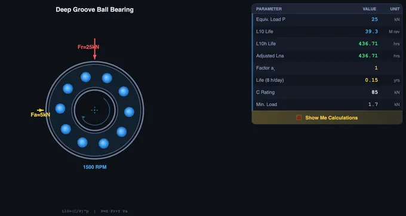

Bearing Life Calculator
L10 Life • L10h Hours • Equivalent Load P • Adjusted Life — Ball • Roller — Simulate • Explore • Practice • Quiz
1 Overview
The Bearing Life Simulator calculates L10 life (basic rating life in millions of revolutions), L10h (life in operating hours), equivalent dynamic load P, reliability-adjusted life Lna, and practical life in years for rolling element bearings per ISO 281. It supports six bearing types: deep groove ball, angular contact, cylindrical roller, tapered roller, spherical roller, and needle bearings.
The canvas shows an animated bearing cross-section on the left and a live results table on the right, updating instantly as you change any parameter. Click 🄎 Show Me Calculations (inside the canvas table) at any time to open a step-by-step breakdown of exactly how the current result was derived.
2 Getting Started & Presets
- Select a Bearing Type (Deep Groove, Angular Contact, Cylindrical, Tapered, Spherical, or Needle). Slider ranges update automatically to match SKF catalogue limits for each type.
- Or click a Preset to instantly load a real-world scenario: Gearbox, E-Motor, Auto Hub, Wind Turbine, or Pump.
- Set C (Rating) — the manufacturer's dynamic load rating in kN. Adjust with the slider or type directly in the number box, or nudge precisely with the [−] [+] stepper buttons.
- Adjust Fr (Radial) and Fa (Axial) loads. Note: the Fa row is greyed out for cylindrical and needle bearings, which support radial loads only.
- Set Speed (RPM) and choose Reliability (90% to 99%).
- Set Daily Hours (next to Reliability) to match actual machine operating hours. The Life in years row in the results table recalculates instantly. Default is 8 h/day; any value between 0 and 24 is accepted.
The canvas results table shows 8 live values: Equiv. Load P, L10 Life, L10h Life, Adjusted Lna, Reliability Factor a1, Life in years, C Rating, and Min. Load — all colour-coded and updating in real time.
3 SI / Imperial Unit Toggle
Click SI (kN) or Imperial (kip) to switch all force values between kilonewtons and kips (1 kip ≈ 4.448 kN). All internal calculations always stay in SI — the toggle only affects what is displayed: slider stepper inputs, canvas table force values, and the minimum load warning update instantly. Life results (hours, years, revolutions) are unit-independent and are unaffected.
4 Simulate Mode & Results Table
The canvas left half shows an animated bearing cross-section with rolling elements, inner and outer races, radial/axial load arrows, and RPM indicator. The right half shows a compact results table with all key outputs. Every change to any input instantly redraws both.
Key formulas in use: L10 = (C/P)p (p = 3 ball, 10/3 roller) • L10h = L10 × 106 / (60n) • P = X·Fr + Y·Fa (if Fa/Fr > e; otherwise P = Fr) • Lna = a1 × L10h • Years = L10h / (h/day × 365).
If the applied load falls below the bearing's minimum load (kr × C), the Min. Load row highlights in red — operation below this threshold risks rolling element skidding and early failure.
5 Show Me Calculations
Click the 🄎 Show Me Calculations button at the bottom of the canvas results table to open the step-by-step calculation modal. It shows 8 fully-worked ISO 281 steps using the exact values currently entered:
- Life exponent p — ball (p = 3) vs roller (p = 10/3)
- Axial/radial ratio check — Fa/Fr vs threshold e to decide whether axial load matters
- Equivalent dynamic load P — full P = X·Fr + Y·Fa working or shortcut P = Fr
- L10 basic life — numeric substitution into (C/P)p
- L10h in hours — conversion using speed n
- Reliability-adjusted life Lna — a1 factor applied
- Life in years — using your Daily Hours setting
- Minimum load check — ✓ pass or ⚠ skidding risk
Change any input and re-open the modal — the steps always reflect the current state. All steps compute in SI regardless of the unit toggle.
6 Explore Mode
Study concepts across Fundamentals, Bearing Types, Life Factors, and Applications. Topics include L10 theory, X and Y load factors, life exponent differences between ball and roller bearings, minimum load requirements, lubrication effects, and contamination factors per ISO 281.
7 Practice & Quiz
Practice generates problems on L10 life, L10h conversion, equivalent load calculation, required C rating, and reliability-adjusted life. Enter your answer and press Enter or click Check. A step-by-step solution appears after each attempt. Quiz provides 5 randomised questions from a pool of 15 with instant scoring.
8 Tips & Best Practices
- The life exponent is 3 for ball bearings and 10/3 for roller bearings — roller bearings are more sensitive to overload.
- Doubling the load reduces bearing life by a factor of 8× (ball) or 10× (roller) — load has a far greater impact than speed.
- Increasing reliability from 90% to 99% reduces life by a factor of almost 5× (a1 drops from 1.00 to 0.21).
- For pure radial loads (Fa = 0), P = Fr for most bearing types; the Fa/Fr threshold check makes this automatic.
- Use Daily Hours to match your real shift pattern — 8 h/day (single shift), 16 h/day (double shift), or 24 h/day (continuous).
- Watch the Min. Load row in the results table — a red highlight means skidding risk. Increase radial load or use a preloaded bearing.
- Use the Presets as starting points, then tweak sliders to explore sensitivity. The canvas table and modal update live.
- Use Keyboard navigation: Tab between controls, Enter/Space to activate; stepper inputs accept direct numeric entry.
Bearing Life Calculation — L10 Life, Equivalent Load, and Step-by-Step ISO 281 Worked Examples

Bearing life is calculated using L10 = (C/P)p, where C is the dynamic load rating, P is the equivalent dynamic load, and p = 3 (ball) or 10/3 (roller). The Bearing Life Simulator applies ISO 281 to compute L10, L10h, Lna, and practical life in years for all six common bearing types — and shows a fully worked, step-by-step calculation breakdown for any combination of inputs at the click of a button.
How Is L10 Bearing Life Calculated?
The foundation of bearing selection is the L10 life equation: L10 = (C/P)p × 106 revolutions, where C is the dynamic load rating published in bearing catalogues, P is the equivalent dynamic load, and the exponent p equals 3 for ball bearings or 10/3 (3.333) for roller bearings. The L10 life predicts the number of revolutions at which 10% of a large group of identical bearings operating under identical conditions will show the first signs of fatigue spalling. This statistical approach, codified in ISO 281, has been the industry standard since the 1940s. To convert L10 to operating hours use L10h = L10 × 106 / (60 × n), where n is shaft speed in RPM. To convert to years, divide L10h by (operating hours per day × 365) — the simulator lets you set your own daily operating hours for this final step.
L10 is often misread as "the bearing will last that many hours." It won't — it says 10% of bearings in a large batch will already have a fatigue spall by then. Half will still be running comfortably at L50 (about five times L10). In a workshop class I sketch this on the board, because the difference matters: you size for L10 in design, but you plan replacement around L50 in maintenance.
How Do You Calculate Equivalent Dynamic Load for Combined Radial and Axial Forces?
When a bearing carries both radial load Fr and axial load Fa, the equivalent dynamic load P combines them into a single hypothetical radial load: P = X × Fr + Y × Fa, where X and Y are bearing-type-specific factors. The axial load is only included when the ratio Fa/Fr exceeds a threshold e; below e, P = Fr and the axial component is negligible. Cylindrical roller and needle roller bearings have Y = 0 and carry radial loads only — the simulator automatically disables the Fa input for these types. The dynamic load rating C represents the constant radial load a bearing can sustain for exactly one million inner-ring revolutions.
How Does Reliability Factor a1 Affect Adjusted Bearing Life?
The basic L10 life assumes 90% reliability. For applications requiring higher confidence, the adjusted life Lna = a1 × L10h scales the result by the reliability factor a1: 1.00 at 90%, 0.62 at 95%, 0.44 at 97%, 0.33 at 98%, and 0.21 at 99%. Increasing reliability from 90% to 99% therefore reduces the expected bearing life by nearly five times. The simulator supports all six standard reliability levels and recalculates Lna instantly when you change the selection.
How Does the Step-by-Step Calculation Feature Work?
Clicking Show Me Calculations inside the canvas results table opens an educational popup that shows all eight ISO 281 calculation steps using the exact values currently entered — bearing type, loads, speed, and reliability. Step 1 identifies the life exponent p. Step 2 checks whether the Fa/Fr ratio exceeds threshold e. Step 3 computes equivalent load P. Steps 4 and 5 derive L10 in revolutions and L10h in hours. Step 6 applies the a1 reliability factor. Step 7 converts to years using the configured daily operating hours. Step 8 compares the applied load against the minimum load Pmin = kr × C to flag skidding risk. This makes every result fully transparent and traceable — useful for both learning and engineering verification.
Who Uses a Bearing Life Simulator?
This simulator is designed for mechanical engineering students learning machine design fundamentals, design engineers selecting bearings for new machinery, maintenance engineers planning replacement intervals, and technical instructors teaching ISO 281 theory. Five built-in presets — Industrial Gearbox, Electric Motor, Automotive Wheel Hub, Wind Turbine, and Pump — load realistic SKF-calibrated values instantly. SI (kN) and Imperial (kip) unit modes are supported throughout.
What Are the ISO 281 Bearing Life Formulas? Quick Reference
| Parameter | Formula | Description |
|---|---|---|
| Basic Rating Life | L10 = (C/P)p | p = 3 (ball), p = 10/3 (roller) — result in millions of revolutions |
| Life in Hours | L10h = L10 × 106 / (60 × n) | n = rotational speed in RPM |
| Reliability-Adjusted Life | Lna = a1 × L10h | a1: 1.00 (90%) → 0.21 (99%) |
| Equivalent Dynamic Load | P = X·Fr + Y·Fa | Use when Fa/Fr > e; otherwise P = Fr |
| Life in Years | Years = L10h / (h/day × 365) | Set daily operating hours to match your application |
| Minimum Load | Pmin = kr × C | kr = 0.01–0.03 depending on bearing type |
What Is the Typical Design Life (L10h) for Different Applications?
| Application | Design Life (hours) | Typical Daily Hours |
|---|---|---|
| Domestic appliances | 1 000 – 2 000 | 1 – 2 h/day |
| Electric motors (small) | 8 000 – 15 000 | 8 h/day |
| Industrial gearboxes | 20 000 – 40 000 | 8 – 16 h/day |
| Automotive wheel bearings | 40 000 – 60 000 | Variable |
| Wind turbine main bearings | 100 000 – 175 000 | 24 h/day |
| Mining equipment | 40 000 – 60 000 | 16 – 24 h/day |
Explore Related Simulators
If you found this Bearing Life simulator helpful, explore our Shaft Torsion Simulator, Gear Trains Simulator, Vibrations Simulator, and Power Screw Simulator for more hands-on practice.